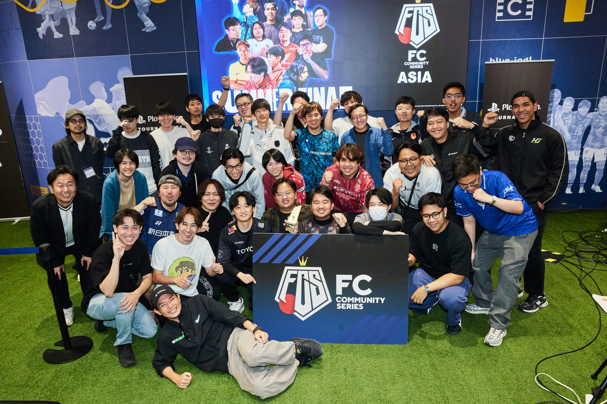
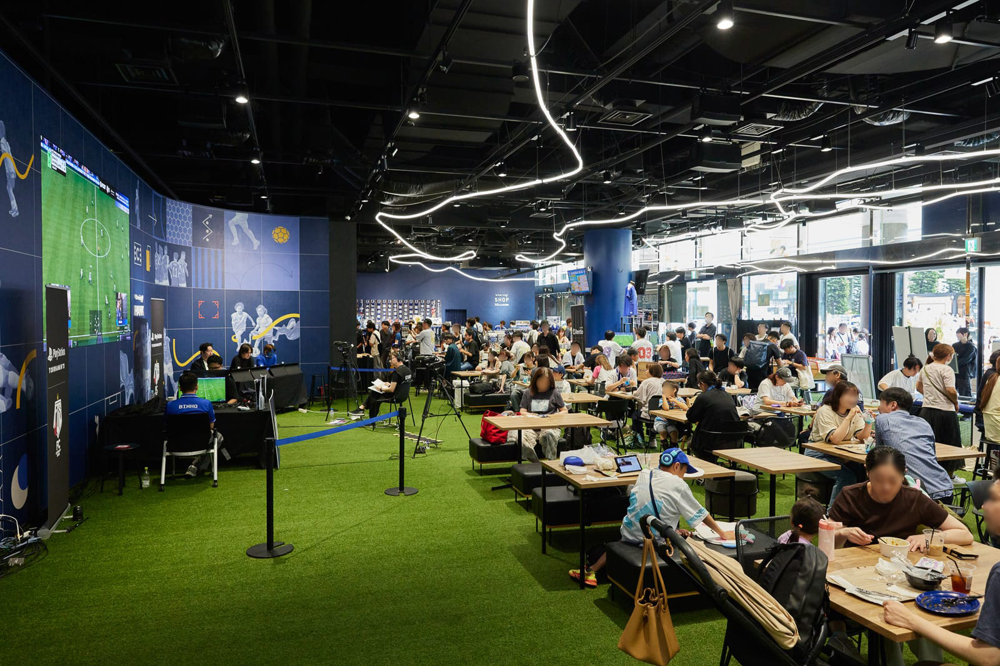
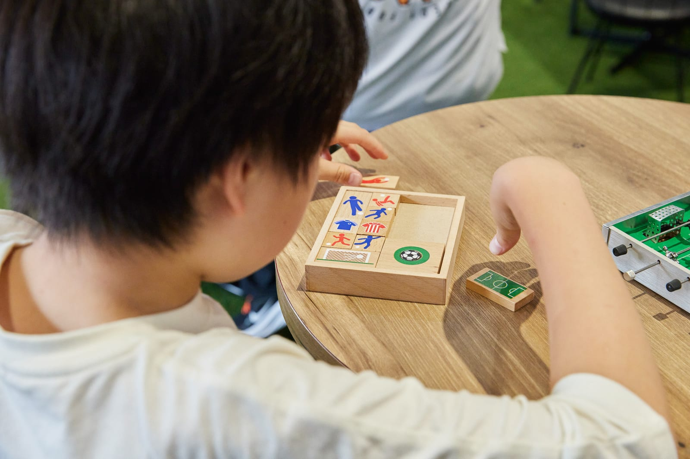
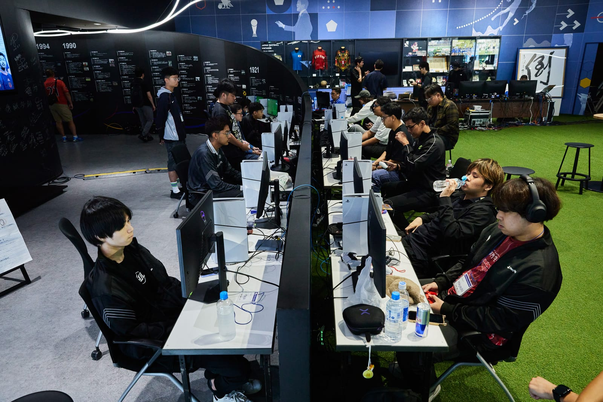
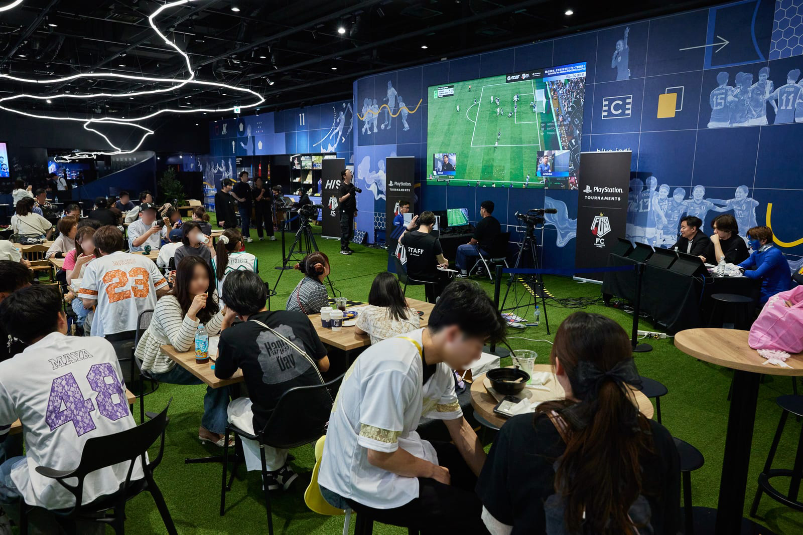
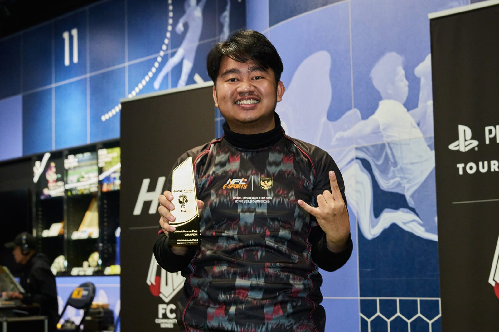

report
FCS26 Asia Summer Final
東京ドームシティにある日本サッカー協会（JFA）の公式施設で、
アジア4カ国・地域のトップが集まる国際eスポーツ大会が開かれました。
e活は、この大会にプラチナプランで協賛しています。

アジア4カ国・地域から集まった選手たち。
写真提供：大会運営様 ｜ 大会公式X：@FCS_JP
venue
会場は、東京ドームシティ。
日本サッカー協会の公式施設です。
「JFAサッカー文化創造拠点 blue-ing!（ブルーイング）」は、日本サッカー協会が2023年12月に
東京ドームシティ内へオープンした体験型施設です。
日本サッカーの歩みをたどる展示や、プロジェクションマッピングを使った体験コンテンツ、
人工芝が敷かれた「PARK」、カフェ＆バーとショップで構成されています。
ゲーム内のイベントでも、貸し会議室でもありません。
日本サッカーの“顔”となる場所で、大会は行われました。

来ているのは、コアなファンだけではありません
blue-ing! が想定している来場者は、サッカーファンだけではありません。
公式サイトでは、遊園地に遊びに来たついでに立ち寄るご家族や、
普段サッカーと関わりのない方も対象として挙げられています。
施設には大型ビジョンを備えた人工芝の「PARK」エリアがあり、カフェ＆バーとショップも入っています。
遊園地のある東京ドームシティの中で、ふらりと立ち寄れる場所として開かれています。
大会は、その中で行われました。観戦は予約不要・無料。
つまり、eスポーツを目当てに来た人だけでなく、
週末をご家族で過ごしにきた方の目にも触れる場所で開かれています。

開催概要
| 大会名 | FCS26 Asia Summer Final |
|---|---|
| 開催日 | 2026年6月13日（土）〜14日（日） |
| 会場 | JFAサッカー文化創造拠点 blue-ing! （東京都文京区 東京ドームシティ セントラルパーク内） |
| 主催・運営 | 株式会社スポーツITソリューション |
| 使用タイトル | EA SPORTS FC™ 26（PlayStation®5） |
| 参加国・地域 | 日本／マレーシア／インドネシア／香港 の4カ国・地域 |
| 位置づけ | アジアNo.1のFC26プレイヤーを決める、日本発の国際eスポーツ大会 |
| 賞金 | 優勝 300,000円／準優勝 70,000円／3〜8位 30,000円／9〜16位 25,000円 |
| 観戦 | 予約不要・無料。どなたでも来場して観戦できる形で開催 |
| 配信 | 大会公式YouTube @fc_comm にてライブ配信 |
大会の規模
4カ国・地域
日本・マレーシア・インドネシア・香港から代表が集結
10,000人超
前シーズン（FCS25）にのべ参加した選手数
2日間
リアル会場での開催。観戦は無料・予約不要
FCコミュニティシリーズは、「世界大会で優勝する日本人選手を輩出する」ことを掲げて続いてきたシリーズです。
各国の予選を勝ち上がった選手だけが、この Asia Summer Final に招待されます。
プロeスポーツチーム ZETA DIVISION のナスリ選手も出場し、アジア王者を争いました。

当日の様子
会場の熱気は、写真と映像でご覧ください。
大会運営様よりご提供いただいた、当日いちばん盛り上がった場面です。


写真・映像はすべて大会運営様よりご提供いただいたものです。
大会公式の発信
当日の様子や試合結果は、大会運営様が公式チャンネルで発信されています。
出典
next
こうした場所で、商品をご紹介します
e活は、こうした大会に協賛し、共同スポンサーの商品をご紹介しています。
「どこで紹介されるのか」を、協賛した大会ごとにお見せしています。